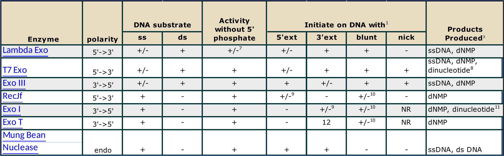
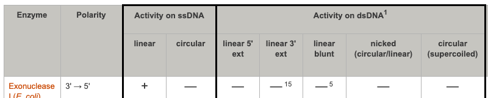
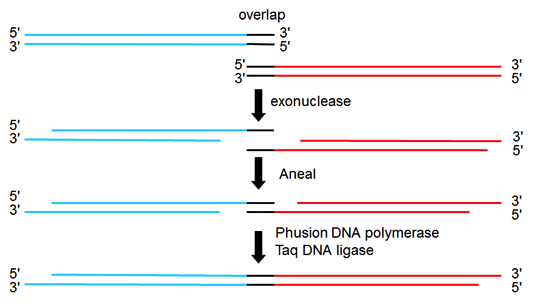

Non-specific exonucleases digest any and all DNAs — linear, circular, double stranded, single stranded, methylated, non-methylated.
Mung Bean Nuclease
T5 Exonuclease
Exonucleases degrade a DNA from its ends. Thus a circular and undamaged DNA molecule is immune to the action of these enzymes. There are a large number of enzymes that are non-specific exonucleases and can be used to degrade DNA in an RNA sample. Others will also degrade RNA.
Section divider: Exonucleases, noting they act only on ends, with two example enzymes.
More-useful Exonucleases

Adapted from the NEB properties-of-exonucleases table
There is extensive diversity within the exonucleases about what types of ends they’ll initiate on and which direction they will go. This chart is from NEB, and you can look up these details if the need for an Exo ever crops up. I will describe what the different column headers mean.
A reference table of exonucleases from New England Biolabs, with columns for polarity, activity on single- and double-stranded DNA, and the products each releases.
Are these arrows 5’ to 3’?
Nope. The grey arrows are indicating 3’ to 5’.
The DNA backbone structure again, with two grey arrows running along the strands. The answer is no: those arrows run 3-prime to 5-prime.
When it says ‘initiates on DNA with a 5’ extension’, the sort of end it is referring to is the products one gets from many restriction enzymes like BamHI.
The BamHI digestion again, shown as the example of what a 5-prime extension means in the NEB table.
Which bond is broken… by all exonucleases?
Again, it is the bond attached to the 3’ hydroxyl that is broken in a nick.
The backbone structure once more. The same bond is broken as with restriction enzymes: the one joining the phosphate to the 3-prime hydroxyl.
Will T5 Exonuclease cut?
5’-gatttctgGAATTTGACACGTG-3’
3’-ctaaagacCTTAA-5’

The T5 Exonuclease row of the NEB table
The DNA shown is blunt on one end, and has a 3’ overhang on the other. To answer the question, you look up T5 Exo in the NEB catalog. It initiates on both blunt and 3’ extensions, so this will chew back the 5’ ends of the DNA from both ends until it is gone.
A DNA that is blunt at one end and has a 3-prime overhang at the other, next to the T5 Exonuclease row of the NEB table. T5 initiates on both, so it degrades the molecule from both ends.
T5 Exonuclease in Gibson Cloning

T5 Exonuclease is used in Gibson cloning.
The Gibson assembly scheme: two DNAs sharing an overlap are chewed back by exonuclease to expose complementary single strands, annealed, then filled in by Phusion polymerase and sealed by Taq DNA ligase.
Exonucleases have many popular uses including the Gibson method of DNA assembly. Here’s a very traditional example of using an exonuclease to create a blunt sticky end. First, the DNA is cleaved with BamHI which leaves behind 5’ 4bp extensions. The fragments are then treated with mung bean nuclease that cleaves single-stranded DNAs exclusively. The result is a blunt-ended DNA that can be ligated to other blunt ends such as those generated by EcoRV.
Two clicks: BamHI cuts to leave four-base overhangs, then mung bean nuclease trims the single-stranded overhangs off to leave blunt ends.